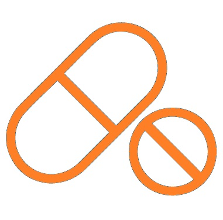
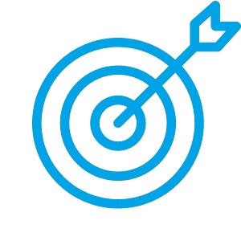

Welcome to JourLab
Bioinformatics & Cheminformatics
🤖 Machine Learning & Deep Learning
⚙️ Molecular Dynamics Simulations
🌐 Database & Tool & Web
1. Research

Computer-Aided Drug Screening and Design (CADD & AIDD & MD)
- Computational Toxicology & Network Toxicology & Network Pharmacology
- Computer-Aided Drug Screening and Design

Computer-Aided Binder Design (Protein & Nanobody)
- Targeting Binder Screening and Analysis
- Targeting Binder Inverse Folding and Generation
2. Publications
-
[1]
FirstMao J, Song Y, Kong M, Guo Y, Liu Y, Pu X. ACS Applied Materials & Interfaces. 2026 Feb 4;18(4):6433-6451.link
-
[2]
FirstMao J, Luo QQ, Zhang HR, Zheng XH, Shen C, Qi HZ, Hu ML, Zhang H. Chemico-Biological Interactions. 2022 Jan 25;352:109784.link
-
[3]
CorrPan CC, Yang CM, Mao J*. Asian Journal of Psychiatry. 2025 Sep;111:104674.link
-
[4]
Co-1stYang MH, Mao J#, Zhu JH, Zhang H, Ding L. Life Sciences. 2022 Apr 30:120583.link
-
[5]
Co-1stLi YL, Mao J#, Tian XF, Song H, Ren JX. Journal of Molecular Structure. 2025 Mar 5;1324:140905.link
-
[6]
Co-1stLi YL, Mao J#, Cheng Z, Zhou XY, Zhang DN, Li YZ, Cao ZX, Ren JX. Molecular Diversity. 2026 Feb;30(1):571-593.link
-
[7]
Co-1stLi YL, Mao J#, Zhou XY, Zhang DN, Li YZ, Cao ZX, Ren JX. Molecular Diversity. 2026 Apr 4. PMID: 41934566.link
-
[8]
Co-1stZhang H, Mao J#, Qi HZ, Xie HZ, Shen C, Liu CT, Ding L. Food and Chemical Toxicology. 2020 Sep;143:111513.link
-
[9]
Co-1stZhang H, Mao J#, Yang YL, Liu CT, Shen C, Zhang HR, Xie HZ, Ding L. Journal of Cellular Biochemistry. 2021 Nov;122(11):1609-1624.link
-
[10]
Co-1stZhang H, Mao J#, Qi HZ, Ding L. Molecular Diversity. 2020 Nov;24(4):1281-1290.link
-
[11]
Kong M, Chen X, Mao J, Yu J, Song YP, Guo YZ, Pu XM. Journal of Chemical Theory and Computation. 2025 Oct 14;21(19):9669-9686.link
-
[12]
Hu J, Yang SR, Mao J, Shi CJ, Wang GC, Liu YJ, Pu XM. Journal of Alloys and Compounds. 2023, 947, 169479.link
-
[13]
Zhang H, Qi HZ, Mao J, Zhang HR, Luo QQ, Hu ML, Shen C, Ding L. Bioorganic Chemistry. 2022 Mar 12;122:105722.link
-
[14]
Zhang H, Liu CT, Mao J, Shen C, Xie RL, Mu B. Toxicology in Vitro. 2020 Jun;65:104812.link
-
[15]
Zhang H, Shen C, Liu RZ, Mao J, Liu CT, Mu B. Journal of Applied Toxicology. 2020 Sep;40(9):1198-1209.link
-
[16]
Chen X, Wang K, Chen J, Wu C, Mao J, Song Y, Liu Y, Shao Z, Pu X. Nature Communications. 2024 Sep 16;15(1):8130.link
-
[17]
Fourth inventor — 基于深度学习和计算模拟的蛋白质变构调节剂的识别方法,中国发明专利,专利号:ZL202211500668.3.
-
[18]
First Author [Under Review] — A Computational Platform for Hapten-Specific Nanobody Engineering: Integrating Pocket Database, Screening and Analysis.
-
[19]
Co-first Author [Under Review] — Bridging Machine Learning and Physics: Blood-Brain Barrier Permeability Prediction and Molecular Dynamics Validation.
3. Links
↑ Go to Top
|